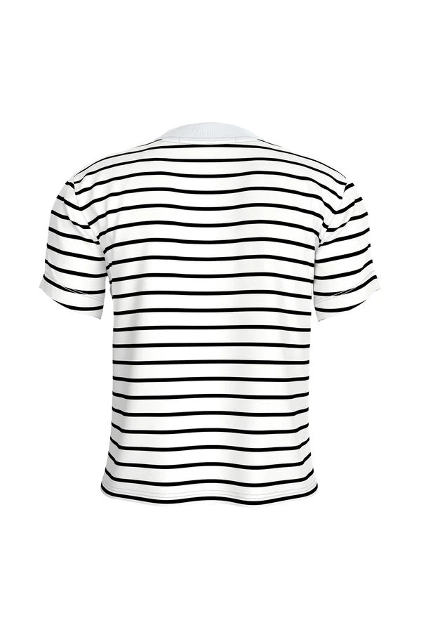

Redes sociales, analítica y reputación
Una parte importante del proyecto es usar datos para tomar decisiones. El cliente sigue publicando manualmente, pero M&M Studio le entrega recomendaciones basadas en el rendimiento de sus perfiles.

Optimización del perfil
Mejora de nombre, foto, biografía, enlaces, privacidad y primera impresión.
Contenido y horarios
Informe mensual con publicaciones que mejor funcionan y horas recomendadas.

Reputación digital
Revisión de menciones, comentarios y contenido antiguo que pueda afectar a la imagen.
Servicios técnicos incluidos
- Copias de seguridad del contenido digital en el Plan Premium.
- Monitorización de menciones para clientes VIP.
- Limpieza de huella digital cuando sea posible.
- Informes de rendimiento y evolución del perfil.